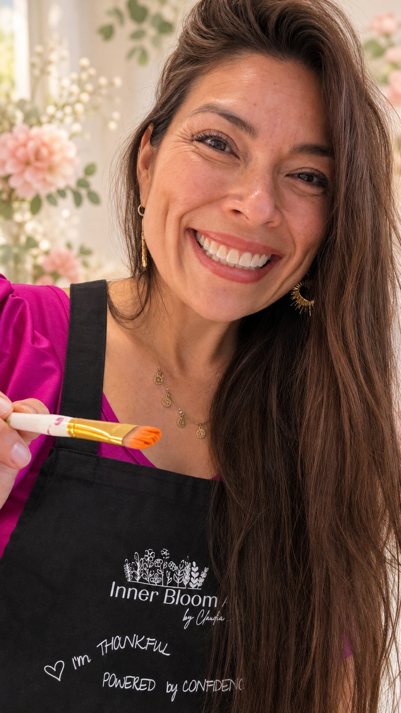

01 / HACER ESPACIO
Soltar lo que ya no necesitas cargar.
Hacer una pausa, reconocer lo que sientes y abrir espacio para algo nuevo.
Tu primer paso para Regresar a ti
Has dedicado tanto tiempo a los demás… ¿cuándo fue la última vez que hiciste algo solo para ti?
Regálate un espacio para escucharte, reconectar con lo que necesitas y crear una obra que te recuerde lo valiosa que eres.
QUIERO REGALARME ESTE MOMENTO ↗ Meditación
MeditaciónUna pausa para escucharte.
 Arte
ArteUn espacio para expresarte.
 Introspección
IntrospecciónUn momento para reconocerte.
Tú también mereces el amor, la atención y el tiempo que entregas a los demás.
Has pasado tanto tiempo cuidando, resolviendo y estando para los demás que a veces te olvidas de preguntarte cómo estás tú.
Si estás viviendo una etapa de cambios, quieres conocerte mejor o simplemente deseas regalarte un momento de calma, creatividad y conexión contigo misma.
A veces la vida se llena de pendientes, responsabilidades y expectativas, y sin darte cuenta, tú vas quedando al final de la lista. Sabes que necesitas un espacio para ti, pero no siempre sabes por dónde empezar.
¿Y si hoy comienzas a elegirte? Puedes comenzar con algo tan sencillo como una pincelada.
No necesitas experiencia artística. Solo curiosidad, apertura y ganas de dedicarte tiempo.
Una experiencia online de meditación, arte y escritura para comenzar a cultivar el amor propio. Te acompañaré paso a paso.
Hacer una pausa, reconocer lo que sientes y abrir espacio para algo nuevo.
Reconocer tus fortalezas, tus necesidades y todo eso que te hace única.
Explorar colores y aprender a pintar flores, sin miedo a equivocarte.
Pintar tu propio jardín de flores, donde cada color y cada forma cuenten algo de ti.
Transformar lo que descubriste en una pequeña acción para seguir cuidándote.
Al terminar, tendrás tu propia pintura, nuevas reflexiones sobre ti y un compromiso personal para llevar a tu día a día.
Porque no se trata de pintar flores perfectas.Aquí no buscamos perfección. Buscamos expresión.
En Inner Bloom unimos meditación, exploración artística y escritura para que el arte sea una manera de escucharte, conocerte y conectar con tus emociones.
En mis talleres anteriores, las mujeres han valorado especialmente tener un espacio propio, crear con libertad y sentirse acompañadas durante el proceso.


Soy artista plástica, mentora en sanación a través del arte y creadora de Inner Bloom Art.
El arte me ayudó a reconectar conmigo misma en un momento de transformación personal. Hoy comparto esa experiencia a través de espacios donde las mujeres pueden crear, reflexionar y descubrir sus propios colores.
He acompañado a mujeres a explorar su mundo interior a través del arte, la meditación y la reflexión, y hoy quiero compartir contigo este primer paso.
No necesitas un estudio de arte ni materiales profesionales. Solo algunos básicos, un espacio para ti y muchas ganas de crear.
Los materiales no están incluidos en el curso. Puedes comprarlos donde prefieras, utilizar los que ya tengas o consultar nuestras recomendaciones.
Estas referencias son opcionales. No son compras obligatorias; puedes elegir otras marcas o utilizar los materiales que ya tengas.
Tú eliges los materiales. Yo te acompaño paso a paso.
Precio especial de introducción
100% online · Inscripción y acceso a través de Skool.
Pago seguro en línea con tarjeta de crédito a través de Skool.
Los materiales artísticos se adquieren por separado. Te compartiré una lista y enlaces sugeridos para conseguirlos.
Una pausa. Una pincelada. Un nuevo comienzo.
Este momento es para mí ↗